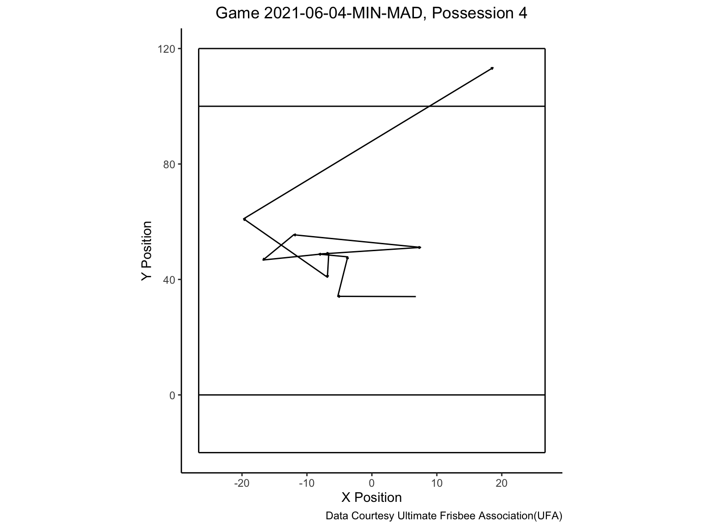
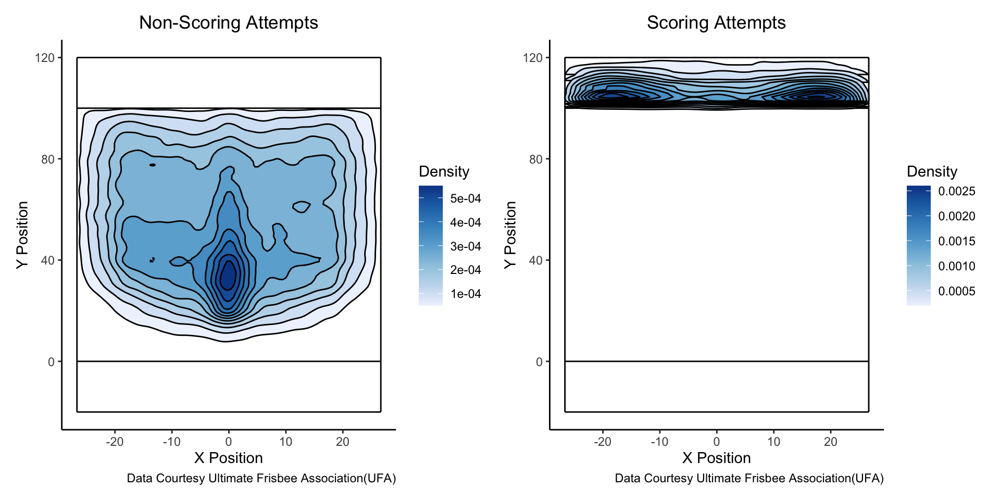
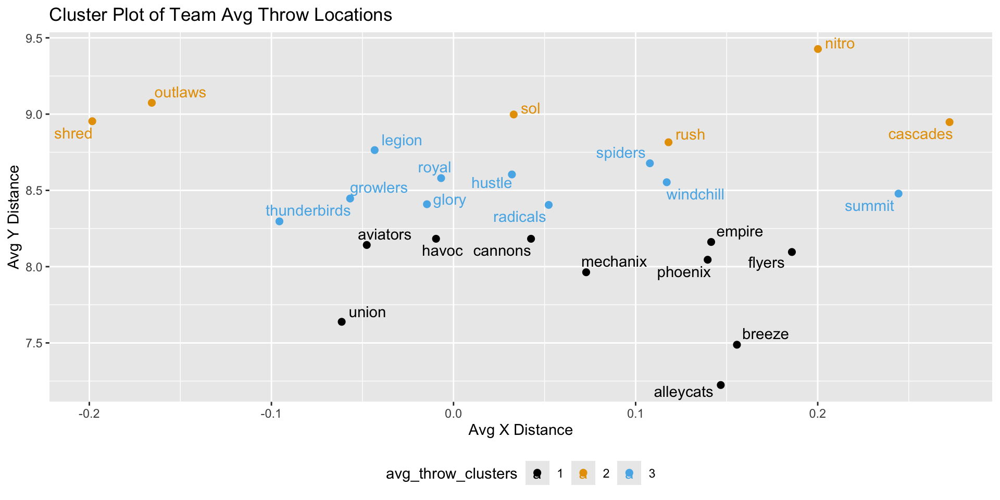

Examining Throwing Tendencies Throughout the Ultimate Frisbee Association(UFA)
Isabella Ferrandiz, Tai Fowler, Lou Zhou
Motivation
Ultimate Frisbee - similar to American(Gridiron) Football
Scoring by passing disc to teammate in opponent’s end zone
Cannot move while holding disc
Turnovers from interceptions, incompletions, and out of bound passes
Strong growth of a professional environment with dedicated leagues and athletes
Data Overview
- Throwing Data Provided by the Ultimate Frisbee Association(UFA), 2021 - 2024
- Per Throw Basis
- Physical Throw Data
- Start and End locations, success status, throw distance and angle
- Thrower and Recipient Data
- Player IDs, Team IDs,
- Game State
- Score, Time Left, Quarter, Possession Number
Outside of Scoring Attempts, Players Tend to Throw Towards the Middle
Teams Attempt Farther Throws During the End of Close Games

Team Archetypes Using K-Means Clustering
Discussion
- Conclusions
- Tendency to throw towards middle, except for scoring attempts
- Teams throw deeper during the ends of close matches
- Limitations
- Uncertainty of end locations around failed passes
- Inconsistent rules across leagues - difficult to interpret across the sport
- Future Work
- Examining throwing tendencies per player
- Determining changes in tendences across years
Appendix - End Location Shiny App
::: :::
Project 2 - Isabella Ferrandiz, Tai Fowler, Lou Zhou